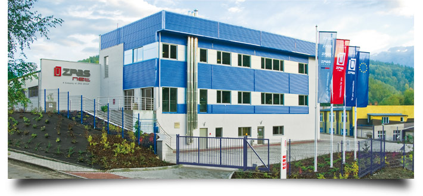

 ZPAS-NET sp. z o.o. was established on 1 June 2004 as a result of spinning off departments specialising in network solutions and power sector equipment from the general structure of ZPAS S.A. The name of the new company features the “net” element that stands for the line of products necessary to develop the infrastructure of modern networks and supervision/ control systems. Another, equally important, product group comprises dedicated elements for the electric power industry incorporating intelligent IT solutions.
The two companies making up the ZPAS Group (ZPAS S.A. and ZPAS-NET sp. z o.o.) offer complementary products, marketing a broad range of articles performing important functions in electronic communications. ZPAS products are widely used as an infrastructural base for telecom and IT networks, as well as enclosures for the telecommunications and power equipment.
ZPAS-NET has been developing very rapidly, recently opening a new plant in Nowa Ruda-DrogosΠaw, within the sub-zone of the WaΠbrzych Special Economic Zone. The plant was officially put into operation on 5 October 2007. The new ZPAS-NET facility has an office area of 800 m2 and the production area of 2500 m2.